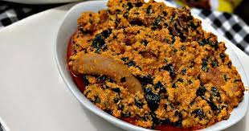

Egusi Soup

Description
Egusi is a West African name for the seeds of plants like squash, melons, and gourds
When dried and ground it become a staple ingredient in many West African dishes. Particularly, in Nigerian culture
Egusi is popular with pounded yam.
These seeds are rich in fat and protein, and add these essential nutrients into West African Cuisine.
Ingredients
- 1 cup blended onions (about 3- 5 and fresh chilies, to taste)
- 4 cups egusi (melon seeds, ground or milled)
- 2 and half cup palm oil
- 2 teaspoons fresh Une (Iru, locust beans)
- Salt and grounded crayfish to taste
- Cooked meat and fish
- 2 cups of pumpkin and waterleaf
- Washed bitter leaf
Steps
- In a large pot, heat the palm oil on medium for a minute
- Slowly add the stock and set on low heat to simmer.
- Scoop teaspoon size balls of the egusi paste mixture into the stock. Be sure to keep ball shape.
- Leave to simmer for 20 – 30 minutes so the balls cook through.
- Add the meat and fish and other bits which you’d like to use.
- Add cut-up pumpkin leaves.
- Add the waterleaf.
- Stir and put a lid on the pot and allow cook for 7–10 minutes, till the leaves wilt.
- Add the bitter leaf. Leave the lid off while the cooking finishes for another 5-10 minutes.